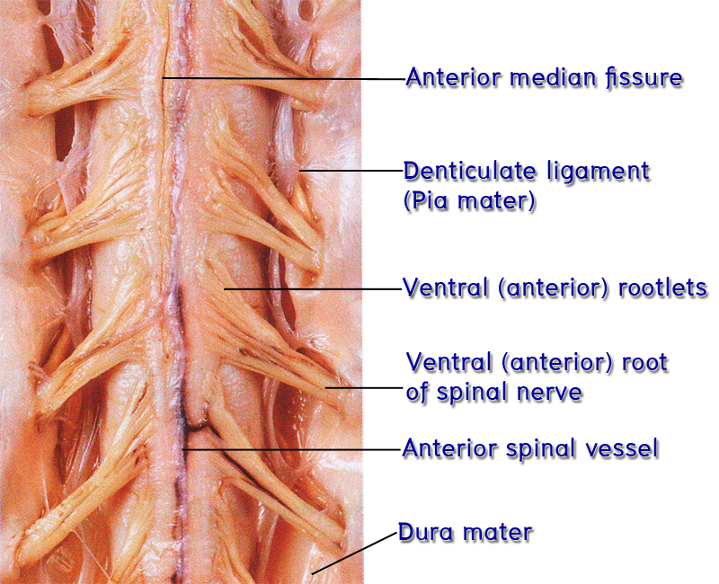

ศึกษา หลอดเลือดที่ไปเลี้ยง ไขสันหลัง
ศึกษาหลอดเลือดที่ไปเลี้ยง spinal cord จาก gross specimen ต่อไปนี้
- Vertebral artery - Anterior spinal artery
- Posterior spinal arteries - Posterior radicular artery - Anterior radicular artery
